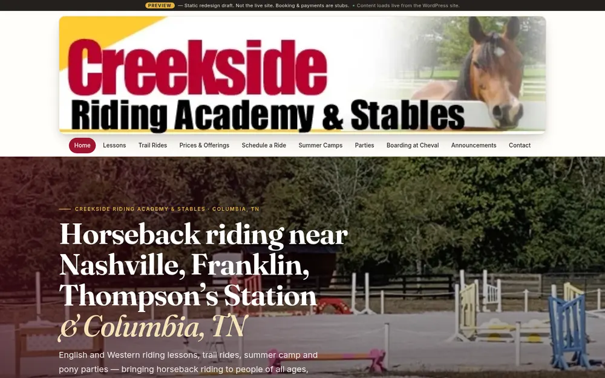
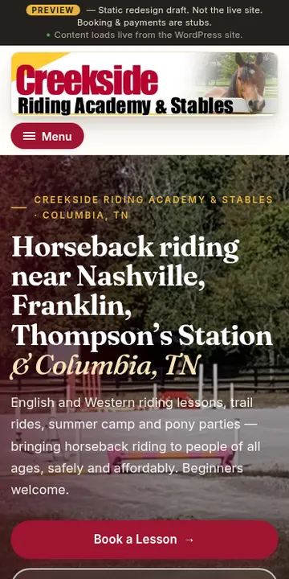
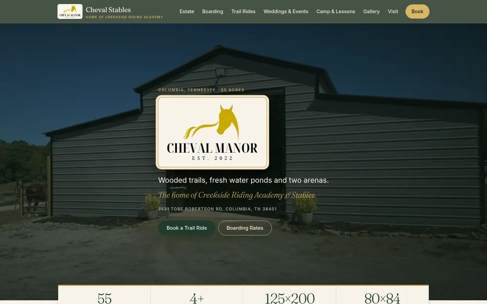
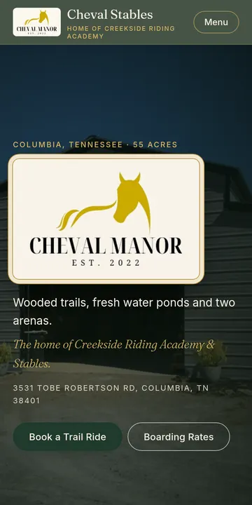
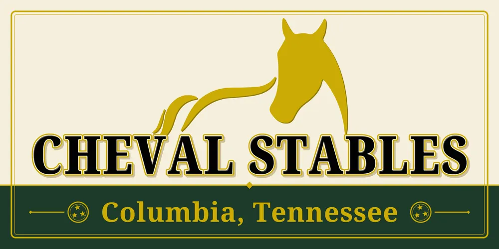
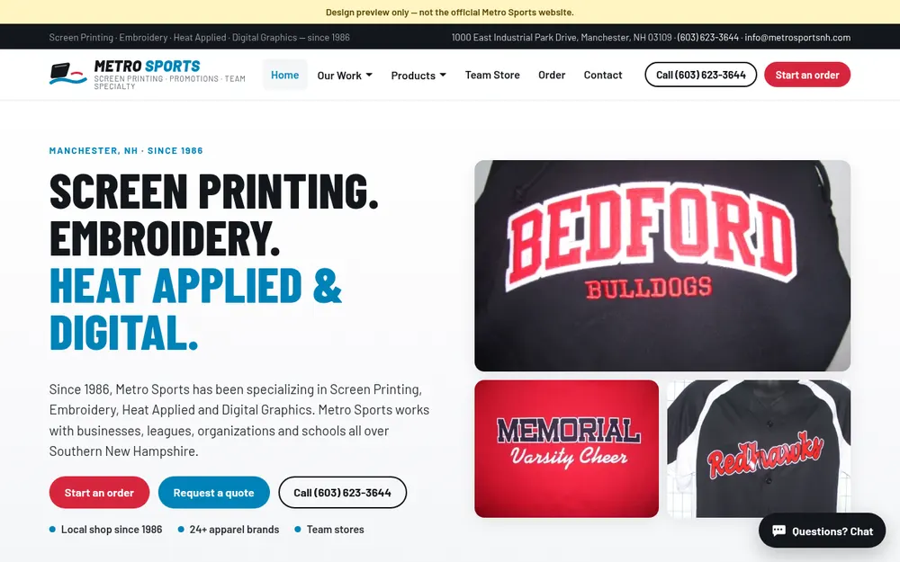
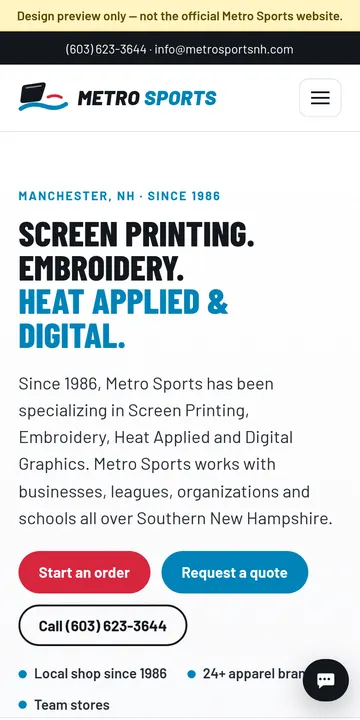
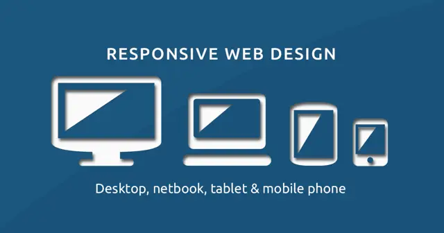
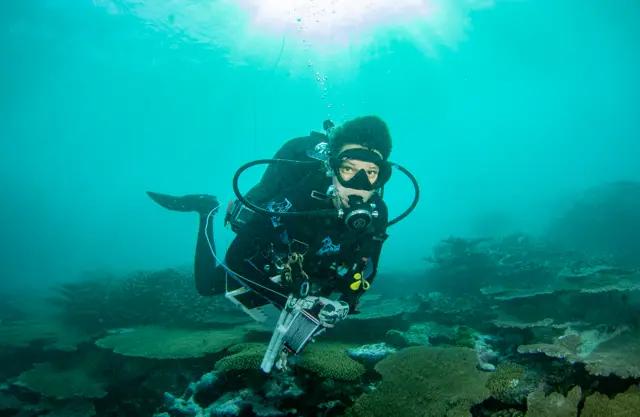

What I do is help you have more time to enjoy the things you enjoy in life, and not deal with tech.
Websites that bring you more customers.
I build good-looking websites that are easy to use on a phone, so customers can call you, book with you, or pay you in one tap. We go at your pace: I set it all up and show you how it works. No tech headaches. Local to Middle Tennessee.
New websitesRedesignsOnline paymentsBookingSign designLogosMonthly website carePhone answering helperShow up on GoogleNew websitesRedesignsOnline paymentsBookingSign designLogosMonthly website carePhone answering helperShow up on Google
What I do
One local designer, start to finish. You talk to the person building your site, in plain English. Farmers, growers, shops and trades: you work hard to feed and serve this community, and your business deserves a website that's just as good as the work you do.
New websites
From a simple one-page site for a new business to a full website. Made to look great on phones.
Redesigns
Already have a site that looks old or is hard to use? I'll make it fresh, fast and easy, and walk you through the new one.
Take payments & bookings
Let customers book a time or pay you right on your website, safely, from their phone. I set it up and show you how to use it.
Sign & graphic design
Print-ready sign files, like the 4×8 ft aluminum panel for Cheval Stables.
Monthly website care
I keep your site running for you: online hosting, safety updates, backups, and small changes each month. You never have to touch the tech.
Phone answering helper
An automated phone helper that answers common questions (hours, prices, directions) when you can't pick up.
How it works
Three simple steps. No tech know-how needed, and we go at your pace.
1. Free chatCall, text, or fill out the short form. Tell me about your business in your own words. No cost, no pressure.
2. See it before you payI show you a sample of your new site and a set price. You decide if you want to go ahead.
3. Go livePay a deposit to get started. I build it, you approve it, and your site goes live. Then I show you how everything works, step by step.
Real projects first, then sample "demo" sites that show what I can build for businesses like yours. Demo businesses are made up.


Client project
Creekside Riding Academy & Stables
Columbia, TN
A new, phone-friendly website for riding lessons, summer camps, parties and booking a ride. The owner still updates the words herself, the same way she always has.
Before & After


Client project
Cheval Stables
Columbia, TN
A fresh look for the 55-acre estate that is home to Creekside: boarding, trail rides, weddings and events, with big "Book a Trail Ride" buttons.
Before & After

Client project
Cheval Stables entrance sign
Columbia, TN
A 4 ft × 8 ft aluminum road sign in the farm's green and gold, designed and sent to the sign shop ready to print.


Redesign concept
Metro Sports
Manchester, NH
Screen printing and embroidery shop open since 1986. The old site was mostly buttons and catalog PDFs, so this concept adds photo galleries, a simple step-by-step order and an easy way to ask for a quote.
Straightforward, local, and below what most Middle Tennessee firms publish. Top-notch work, priced fairly for hardworking local businesses. In the end, what I do is help you have more time to enjoy the things you enjoy in life, and not deal with tech.
Money tight? Let's talk. We understand how hard starting a business can be, and how it can struggle. We're here for you. I offer a sliding scale based on what you can afford. I want to help this community, period.
We want to see you grow just as much as we want to see our families grow. Once you're with us, we're family and we're going to grow.
Print-ready files; panels billed by your sign shop.
Setup & tech help
$75 / hour
Help moving files, setting up email, the phone helper, and other tech chores.
Monthly website care
$150 / month
I keep your site online, safe and backed up, plus up to 1 hour of changes a month. $49/mo for one-page sites.
Final pricing is worked out from your scope after a free consult. You pay half up front to get started and the rest when your site is ready. Pay a deposit
Meet your designer
About Dane
“What I do is help you have more time to enjoy the things you enjoy in life, and not deal with tech.”
Dane Dison
I'm Dane Dison, a web designer and developer and the founder of Mighty Organix Consulting. I'm a graduate of the University of Houston, and today I design and build websites for small businesses around Columbia, Spring Hill, Franklin and Nashville.
I've been designing and building websites since the early 2000s, when I built all the websites for Hanes Consulting Incorporated, on Waters Avenue in Tampa, and served as general manager of HCI Flash Tampa (hciflashtampa.com). In those years I designed and maintained websites for Tampa and Ybor City businesses.
If you've run your business for years and technology isn't your thing, you're exactly who I like to work with. Farmers, growers and long-time local owners are the people that feed us and keep this community running, and I treat your business with that respect. We understand how hard starting a business can be, and how it can struggle. We're here for you. If money is tight, I offer a sliding scale based on what you can afford. We want to see you grow just as much as we want to see our families grow. Once you're with us, we're family and we're going to grow.
Tennessee strong. I like to say I help folks get off of the tractor and get on the spaceship, gently and at your own pace. My goal is simple: help you bring in more money with less running around. I set up tools that streamline how you bring in income, like online booking, card payments, contact forms that catch new customers, and automatic follow-ups. Online booking, an AI phone receptionist and automatic replies mean fewer phone calls to juggle. And as the years go on, your business can run a little easier, so you don't have to work as hard to keep it going.
How I build: every site is designed for phones first, loads fast, and has clear buttons to call, book or pay. I'm hands-on from the first call to launch, and I keep your site maintained afterward so it keeps working for you.
I've also taught scuba diving for 25 years, so I'm used to explaining new things in plain, simple steps.
You get one person from first call to launch, and a fixed quote before any work starts.

Built for every screen, phones first

25 years teaching scuba
25years teaching scuba
20+years building websites
1person from first call to launch
24/7online booking & payments for your customers
Education
University of Houston graduate
Early 2000s · Tampa
Hanes Consulting Incorporated
Built all of the company's websites. Based on Waters Avenue in Tampa.
Hanes Consulting era
General manager, HCI Flash Tampa
hciflashtampa.com
Tampa & Ybor City
Local business websites
Designed and maintained websites for Tampa and Ybor City businesses.
25 years
Scuba diving instructor
Teaching people new skills in plain, simple steps.
Today · Middle Tennessee
Mighty Organix Consulting
Web design and development for small businesses in Columbia, Spring Hill, Franklin and Nashville: phone-first sites, online booking, payments and ongoing care.
Book a free consult
Tell me a little about your business. I'll reply with ideas and a set price, in plain English. It's free, and there are no silly questions.